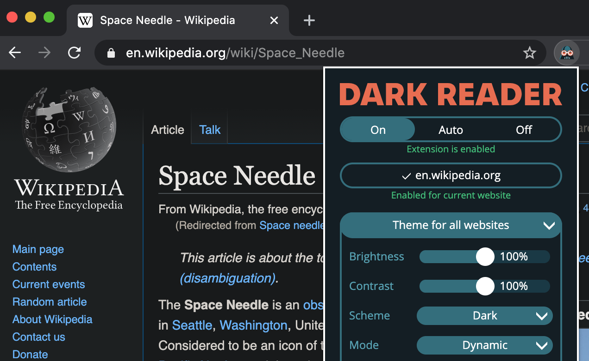

How to enable Dark Mode on Facebook, Amazon, YouTube, Google Search, Wikipedia, Twitter and many other websites?
Install Dark Reader browser extension. Configure the dark theme: brightness, contrast and sepia. Enable for all websites or particular domains. Use the following official links:

Dark Reader is an open source eye-care browser extension. It doesn't send user's data anywhere. Trusted by 8,000,000 users. Developed since 2014. Support us. Good luck!